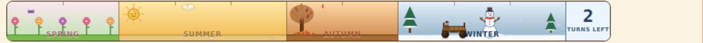

puzzleDrag2 · ProposalsAll proposals › 01 · The Boardbefore → after · grounded in src/
Proposals · Core surface 01
The Board — fully-defined proposals
The 6×6 drag-to-chain board is the game's best interaction; the work is in how it is
framed. Each proposal below pairs a picture of the game as it is now
with a rendered mock-up of what to build, an
options table where a call is yours to make, and a concrete file:line implementation spec.
Board through-line. Four framing fixes carry
most of the value: (B1) retire the candy-square tile backdrops so the seasonal art and the parchment identity
read; (B2/B3) give the board its real-estate back on both viewports; (B4) make the season strip legible; and
(B6) close the feedback gaps (silent failed chains, blind tap-tools, an invisible active boss, and
reduced-motion leaks). None is a rebuild.
B1S1Effort MTop priority #4
Retire the saturated per-category "candy squares" — let the illustration + season read
Every board tile is baked onto a fully-saturated per-category color square (grass = green,
grain = yellow, veg = orange, fruit = red…). It's a primary-colored match-3 grid dropped into a muted
storybook frame — two games touching edge to edge — and the loud squares override any seasonal read.
Backdrops baked in src/textures/categories/*; frame is parchment-cream
(GameScene.ts:700).
NOWsaturated category squares
🌿
🌾
🥕
🍎
🌿
🌳
🍎
🥕
🌾
🌸
🌿
🍎
🌾
🌿
🥕
🌳
🍎
🌸
🥕
🌾
🌿
🍎
🌳
🥕
🌾
🌿
🌸
🍎
🥕
🌿
🌳
🌾
🍎
🥕
🌸
🌿
color duplicates the silhouette; season invisible
Color is doing the same job the crop silhouette already does — so the boldness is noise,
not information, and it drowns the season. (Real render on the desktop shot below.)
PROPOSED — Option Akraft base + faint tint + hairline
🌿
🌾
🥕
🍎
🌿
🌳
🍎
🥕
🌾
🌸
🌿
🍎
🌾
🌿
🥕
🌳
🍎
🌸
🥕
🌾
🌿
🍎
🌳
🥕
🌾
🌿
🌸
🍎
🥕
🌿
🌳
🌾
🍎
🥕
🌸
🌿
spring field breathes through; tiles read as one set
One parchment/kraft base for every tile; category encoded as a subtle inner hairline
(±8–12% hue lean). The seasonal field gradient behind the grid now does real work — this is the
same board in spring. Swap the gradient token to show summer/autumn/winter.
Options — pick the tint intensity
A · Kraft + hairlineRecommended
One shared kraft backdrop; category = a thin colored inner ring only. Pro:
maximal season legibility, cleanest brand fit. Con: relies most on the silhouette for category
ID — validate the winter/mine set (see B6 silhouette note) first.
B · Desaturated tint
Keep a per-category wash but pull saturation −40% and lightness +15% toward
parchment. Pro: lowest-risk, preserves the current at-a-glance color cue. Con: still a
color grid; season read only partly returns.
C · Full seasonal wash
No per-category color at all; the whole board takes the season field gradient and
a vignette. Pro: strongest seasonal identity. Con: category rests entirely on the art;
needs the silhouette pass done first, so sequence it after A ships.
Implementation
Add a shared drawTileBackdrop(ctx, category, season) helper and call it from every
src/textures/categories/*.ts draw instead of the per-file saturated
fill; drive the base from --parchment-family values and the hairline from the existing
biome/category accent.
Let the seasonal field gradient behind the grid actually show — the board bed already reads
--field-* tokens (src/tokens.css:97); today the tiles
cover it. Neutral tiles expose it for free.
Add a golden-image test over the 6-biome × 4-season matrix from
src/visualTesting/matrix.ts so the season read is regression-gated.
Mobile: collapse the chrome stack so the 6×6 grid dominates above the fold
On a 390-wide phone the board begins ~45% down the screen: railhead → tools → a fixed
148px stockpile → then the grid. The signature interaction is squeezed into the lower
~55%. Fixed panel height at puzzleBoard.tsx ~768; idle stockpile at
IdleView ~233.
NOWboard pushed below the fold
☰Hearthwood Vale◉ 1,240Lv 4
🪓
💣
⛏️
🌾
STOCKPILE · 1/3 KINDS
🌾 4
🥕 0
🍎 0
148px fixed — mostly empty
🌿
🌾
🥕
🍎
🌿
🌳
🍎
🥕
🌾
🌸
🌿
🍎
🌱Board🏘️Town🗺️Map📦Inventory👥Townsfolk📖Quests
Two tall panels sit above the grid; the board is clipped and its bottom rows fall below
the nav. First thing the eye lands on is empty stockpile, not the game.
PROPOSEDboard first; chrome collapses
☰Hearthwood Vale◉ 1,240Lv 4
🌸 Spring
8 turns
🌿
🌾
🥕
🍎
🌿
🌳
🍎
🥕
🌾
🌸
🌿
🍎
🌾
🌿
🥕
🌳
🍎
🌸
🥕
🌾
🌿
🍎
🌳
🥕
🌾
🌿
🌸
🍎
🥕
🌿
🌳
🌾
🍎
🥕
🌸
🌿
grid dominates, above the fold
🌾 4
🪓
💣
＋
🌱Board🏘️Town🗺️Map📦Inventory👥Folk⋯More
Season readout compresses to one line; the stockpile collapses to owned-only chips and
docks with a thin hotbar under the grid. The 6×6 is now the biggest object on screen.
Implementation
Make the idle stockpile height content-driven, not the fixed 148px
(puzzleBoard.tsx ~768); collapse to owned-only chips + a "+N more"
affordance (this is B5).
Replace the season strip with a single-line season + turn readout on mobile (this is B4); move the
tool rack to a thin hotbar pinned below the grid.
Target: on 390×844 the grid's top edge sits within the first 30% and all 6 rows clear the nav.
Add an e2e assertion in tests/e2e measuring the board rect vs viewport.
B3S1Effort L
Desktop: a purpose-built composition instead of a blown-up phone column
On desktop the square board floats in a stretched portrait column with ~40–45% dead
parchment, while a thin rail of secondary chrome (stockpile 0-rows, greyed tools) competes for the eye.
Hierarchy inverts — the chrome reads bigger than the game. Grid is
minmax(360px,44%) minmax(0,1fr), puzzleBoard.tsx BOARD_LAYOUT_CSS ~1749.
NOW — real renderdesktop, 1280×1024
The board is a small centered square; ~40% of the viewport is empty parchment above and
below, and the left rail's stockpile 0-rows and greyed locked tools out-mass the grid.
PROPOSEDboard-dominant, docked rail
☰Hearthwood Vale · Farm◉ 1,240Lv 4 ▸
🌸 Spring
8 turns
🌿
🌾
🥕
🍎
🌿
🌳
🍎
🥕
🌾
🌸
🌿
🍎
🌾
🌿
🥕
🌳
🍎
🌸
🥕
🌾
🌿
🍎
🌳
🥕
🌾
🌿
🌸
🍎
🥕
🌿
🌳
🌾
🍎
🥕
🌸
🌿
STOCKPILE
🌾 4
TOOLS
🪓
💣
＋
Board grows toward the vertical ceiling and centers; the rail (stockpile + tools) docks
as a fixed-width sidebar of compact cards. The dead parchment becomes structure, not emptiness.
Options — how to spend the desktop width
A · Board + docked railRecommended
Center a size-capped board, dock tools/stockpile as a sidebar (shown). Pro:
true desktop layout, uses the width for real chrome. Con: a genuine second layout to maintain.
B · Centered "play frame"
Keep the single phone-width column but center it in a decorative parchment frame
(map-style border art on the sides). Pro: cheap, one layout. Con: still doesn't grow the
board; the sides are decoration, not function.
Implementation
Give BOARD_LAYOUT_CSS a @media (min-width:900px) composition
(puzzleBoard.tsx ~1749): board column flex:1 with a
max-inline-size cap and place-items:center; rail a fixed
~180px column of stacked cards.
Size the board off min(available-height, width-cap) via game/layout.ts:54
so it grows toward the vertical ceiling rather than a fixed 44% column.
Reuse the same collapsed stockpile/tools components from B5 so mobile and desktop share one source.
B4S1Effort M
Season strip: keep the animated art — fix the label ↔ wagon collision
Re-reviewed against the live scene. The strip is a bespoke Phaser scene and
one of the most alive things in the game: proportional Spring→Winter zones, per-season painterly
vignettes (a cherry tree, a smiling sun with pulsing rays, a maple + pumpkin, evergreens + a
snowman that puffs breath), four continuous particle systems (petals, gold motes, falling leaves, snow) and an
articulated wagon whose wheels spin, horse legs pump and body bobs as it walks left→right to mark turns spent.
The defect isn't the art — it's the packaging: all of it is crammed into one 52px band. The four
season names are fixed-size, zone-centered, bottom-anchored with no width-fit or truncation
(seasonStripScene.ts:771), and the label layer is composited on top
of the wagon (layers built labels-after-wagon, :136) — so the moving
sprite and the low-contrast type share the bottom third of the strip, worst on the narrow autumn/winter/fishing
zones. Zones :298; wagon+animation :819–969; numeral panel
NUMERAL_PANEL_PX = 56.
NOW — real renderwinter · wagon on the word

Real render. The wagon has walked into the winter zone and sits on top of the
"WINTER" label and the snowman; "SUMMER" and "AUTUMN" read as ghosts on their own gradients. The
vignettes are lovely — the type and the moving sprite are just fighting for the same 52px.
PROPOSED — Option Aname once · wagon on its own rail · vignettes kept
🌸 Spring8 turns left
🛒
🌸☀️🍂❄️
Current season + turns-left is named once, legibly, in the panel. The wagon rides its
own hairline rail (top), never over text; the four seasons keep their existing painterly
vignettes on the progress track below (dimmed until reached), width-fit so nothing overprints. Zone-
proportional timing survives in the marker spacing. (Glyphs stand in for the real
sprites — the vignettes and wagon animation are kept, not flattened to emoji.)
Options
A · Name once · own wagon rail · keep vignettesRecommended
Current season + turns spelled out once in the numeral panel; the four painterly
vignettes stay as markers on the progress track (dimmed until reached); the wagon moves to its own hairline
rail above them. Pro: zero text-on-sprite collision, keeps the charming animated art, works at any
width. Con: the exact turn each season starts becomes implicit (marker position).
B · SPR/SUM/AUT/WIN + elide
Keep four in-zone labels but 3-letter abbreviations, and measureText-elide
any label whose zone is narrower than its text. Pro: keeps the explicit timeline metaphor.
Con: still puts text on the gradient; the wagon still needs its own track to stop the collision.
Implementation
Rework the labels at seasonStripScene.ts:771 to render only the
current season name (in the numeral panel) and keep the other three as their existing vignettes
on the track; add a measureText width-fit / elide so a label can never overflow its zone.
Give the wagon its own y-track above the label band (seasonStripScene.ts:819)
so the animated sprite and any text never share pixels — and fix the layer order that composites the
season label over the wagon (seasonStripScene.ts:136).
State the season goal (coins / harvest target) beside the turns readout so the strip answers
"what am I working toward", not only "how many turns left" (feeds
X1 · reward legibility).
On fishing, give the tide chip its own row (see B6 status-chip slot).
Re-review verdict: keep the scene. The wheel-spin
(1100ms) and horse-leg cadence (230ms) are fixed and unrelated to travel speed — decorative, not a bug. The
only real fixes are the width-fit and the wagon/label depth separation above.
B5S2Effort M
Stockpile & tools: collapse empties, split "owned" from "craftable"
Idle lists every reachable resource up to 12 and renders empties at 0.55 opacity; the panel
is a fixed 148px regardless of content (fish idle shows "0/0 KINDS" — a full panel saying nothing). The
tool rack shows count-0 tools as greyed first-class tiles that read as broken affordances.
puzzleBoard.tsx IdleView ~233, puzzleToolFilter.ts:113,
ToolTile ~887.
NOWempties at full prominence
STOCKPILE · 1/3 KINDS
🌾 4
🥕 0
🍎 0
TOOLS
🪓
💣
⛏️
🌾
🔪
"0" tools read as broken art
The densest state drove the panel height, so an empty stockpile reserves 148px to say
nothing, and a wall of grey "0" tools dilutes the two live ones.
PROPOSEDowned first, rest tucked
🌾 4Wheat
+8 more to gather
TOOLS
🪓
💣
＋ Craft more
Owned resources first with a quiet "+N more to gather" footer; owned tools only, with a
single "Craft more" shelf entry replacing the grey wall. Panel shrinks so the board rises (feeds B2).
Implementation
In puzzleBoard.tsx IdleView ~233 render owned kinds first, hide
0-count behind a "+N more" chip; when a biome has 0 kinds, show a one-line hint ("Chain fish to start
your catch") and let the panel auto-height.
Split puzzleToolFilter.ts:113 output into
owned&&count>0 (rack) vs craftable&&unowned (a subdued "Craft more"
shelf); drop the empty dashed hotbar slots on mobile.
Keep the fixed height only for the chain/tool active states that actually need it.
B6S1–S2Effort S–MTop priority #5, #11
Close the feedback gaps — silent failures, blind tools, invisible bosses, motion safety
Four edge-of-the-board feedback gaps sit right next to the lavish success juice, so their
absence reads as a bug. They share one fix pattern: make every input produce a proportional response, and
gate the vestibular-heavy juice behind prefers-reduced-motion.
a · Too-short chain = zero feedbackS2
A sub-min release calls clearPath(true) silently; an "error" SFX is
defined but never played (GameScene.ts:1730,
audio/index.ts:83). Fix: on the invalid branch fire the existing
error SFX low, a 20ms haptic, a 140ms shrink+fade of the dropped path, and a one-shot red edge flash.
b · Tap-tools show no target previewS2
Bomb (3×3) / sickle (row) fire immediately on tap with no aim preview, so a mis-tap
wastes a scarce charge (GameScene.ts:1447). Fix: on pointer-move
while armed, glow the exact affected cells; add press-and-hold-to-aim / two-tap confirm for area tools.
c · Active boss has no on-board reminderS2
Once the intro modal is dismissed, the board shows no objective, progress, or raised
min-chain (features/boss/index.tsx:9, GameScene.ts:598).
Fix: a persistent boss banner (portrait, name, progress bar, "Chains need N+" pill) + a flame tint
on the idle panel. Mock below.
d · Reduced-motion leaks on canvasPriority #5
CSS motion is gated but screen-shake, radial flash, particle bursts and collapse are
not (GameScene.ts:485/2052/572); _dur() is a no-op. Fix:
route shake/flash/burst/duration through one _motionEnabled() check; keep the audio/haptic
ladder so success still feels rewarded. Also fix the stale tokens.css comment.
Mock — the persistent boss banner (proposal c)
🧊
Hoarfrost, the Frozen TitanChains need 5+
9 / 20
A compact, always-visible boss banner in/above the action panel: portrait, name, live
progress (boss.progress/targetCount already computed) and the raised min-chain pill. The
idle board picks up a faint flame tint so it signals "boss active" at rest.
Implementation
a: add the invalid-release branch feedback in GameScene.ts:1730;
wire play('error') (already defined, called nowhere).
b: add a pointer-move highlight for armed area tools in the tool-aim path
(GameScene.ts:1447/1767); optional hold-to-aim.
c: render a persistent boss banner component fed by boss.*; tint the idle panel
with the flame accent while a boss is live.
Hazard atmosphere is invisible — "fire & rats" looks identical to idle. Add a colored
edge glow/vignette, a hazard chip in the rail head (name + turns-to-resolve), and per-tile smoke/flame/gnaw
markers; verify the atmosphere renders at all (GameScene.ts ~529).
Winter/mine tiles lose type-identity — snow/grey wash flattens silhouettes; a match game
needs instant parsing. Preserve each crop's silhouette through the overlay (this also de-risks B1 Option A/C).
One status-chip slot across biomes — fish gets a tiny "High Tide ·3" pill, mine gets
nothing. Standardize a labeled rail-head status chip ("flips in 3") for all three biomes.
Fertilizer has no armed state — add a persistent "Fertilizer active" chip + a one-shot
sparkle on the biased spawns.
1500ms idle warm-up — ramp ambient amplitude 0→1 over ~500ms instead of hard-gating
so the first-seen board is subtly alive (ANIM_STARTUP_DELAY_MS).
B7NEWfrom this pass
New findings surfaced while grounding these mockups
Items not in the original report, found reading the board code for this proposal pass. Verify
against the live build before scheduling. The most visual one — the overloaded dim signal — now has a
Now → Proposed picture.
Now → proposed — the overloaded 0.35 dim
NOW"disabled" and "low-value" look identical
🌾
🌾
🥕
both 0.35 — which can I still use?
"Can't select" and "legal but low-value" both render at 0.35 alpha, so a usable tool target
reads as disabled — the player can't tell which dim tiles are still in play.
PROPOSEDtwo distinct states
🌾
🌾
🥕
Suboptimal-but-legal stays brighter (~0.6) with a faint positive ring; only truly unusable tiles
get the deep 0.35 + desaturation. The dim axis now carries one meaning, not two.
The season field gradient is drawn but almost fully occluded — the --field-*
tokens exist and the bed reads them, yet 36 opaque candy tiles + a 0.55 band leave only a sliver visible.
B1 doesn't just neutralize tiles; it activates an already-built system that currently renders for
nothing. Worth calling out as "free" seasonal payoff.
Board host is a bare <div> with no role/aria-label/tabIndex
(prototype.tsx:360) — the a11y keyboard/AT gap (cross-cutting) starts here;
adding role="application" + an announce() bridge is a board-local change.
Overloaded dim signal — "can't select" and "legal but low-value" both use 0.35 alpha, so
useful tool targets read as disabled. Use ~0.6 for suboptimal or invert to a positive glow on high-value
targets.